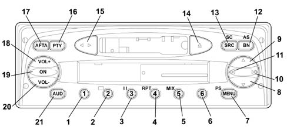
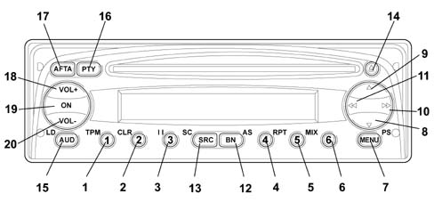
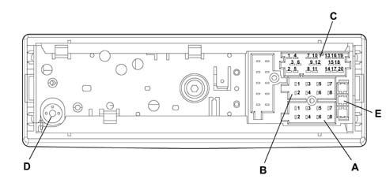
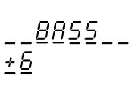
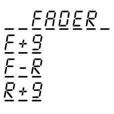
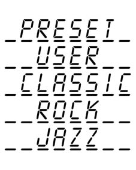
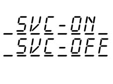
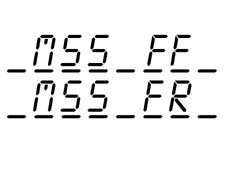

5570T CAR RADIO AND CAR TELEPHONE
- Path
- Descriptions > 55 ELECTRICAL EQUIPMENT > 5570 ACCESSORIES > 5570T CAR RADIO AND CAR TELEPHONE
- Kind
- system description
- Applies to
- all engines; all production periods
- Interactive page
- https://sloeber94.github.io/elrnDB-fDbl/en/#/2582345
Applies to: all engines; all production periods
Two models of radio are available as an option: one with a CASSETTE and one with a CD.
Both models have been developed in conjunction with BLAUKPUNT (BOSCH) based on the following criteria:
- The radio has been designed in accordance with the specific acoustic conditions of the passenger compartment and fits perfectly with the design of the dashboard.
- The radio is placed in a user-friendly position for the driver and passengers.
- It is easy to use thanks to the small number of controls which can be easily identified.
- It includes a theft protection system that ensures the radio can only be used on the vehicle to which it has been factory-fitted.
Anti-theft protection is ensured by two different systems:
- the radio with cassette comes with a four-figure code that is requested whenever the radio is turned on after the battery has been disconnected;
- the radio with CD, on the other hand, communicates with the electronic unit that manages the electrical equipment (body computer). When the radio is activated, the body computer reads the radio code and determines whethe to turn it on or not. When the radio is connected to another car without a body computer, the set cannot be used because the radio does not recognise the electronic unit it is designed to communicate with and the radio is blocked. If the radio is used on another vehicle with a body computer, it can be used only if the four figure security code is known.
The radio also features a logic which automatically switches the radio on and off: if the radio has been accidentally left on (with the engine switched off), it will switch off automatically after 20 minutes to prevent the battery from being run down.
To summarize, the radio specifications are:
- 5 frequency bands FM I, FM II, FMS, MW and LW
- Automatic and manual station search
- 30 programmable stations, 18 on FM, 6 on MW and 6 on LW
- RDS/EON receiver
- TA traffic news function
- Autostore for FMS, MW and LW
- Automatic mono/stereo selector
- Volume adjustment according to speed (Speed volume control) - (CD version only)
- CD player and programming with functions that can be set: selection/search, random selection, scan - (CD version only)
- Dolby B noise reduction - (CD version only)
- Radio reception when setting CD - (CD version only)
- Cassette player with mechanical autoreverse
- 4 channels with 20W peak power each
- Aerial
- 2 speakers (Van version) 6 speakers (Panorama version)
- 2 tweeters in dashboard
- 2 Ø 165 in front door panel
- 2 Ø eliptical in rear parcel shelf mounting
- Separate treble - bass controls
- Balance control
- Last status: each time the radio is turned on, the settings prior to deactivation are restored.
- Telephone mute: when a phone is connected (only for Motorola or Motorola-compatible mobiles) to the car, every other radio function can be deactivated when there is an incoming call.
- Telephone in: radio speakers can be used to listen to the phone in handsfree mode.
Front view (version with cassette)
The diagram below shows the front view of the radio with cassette.

Front view (version with cassette)
Button functions
Button N° | Description of functions | Tuner | Cassette | |
|---|---|---|---|---|
Short button press | Long button press | |||
1 | Recall preset | Programme preset | 1. Recall preset 2. Programme preset | Button 2: Dolby B ON/OFF |
2 | ||||
3 | ||||
4 | ||||
5 | ||||
6 | ||||
7 | Access menu | Scan preselection | 1 Access menu 2 Scan preselection | Access menu |
8 | Automatic backwards search | Automatic continuous backwards search | Automatic search | MSS backwards |
9 | Automatic forwards search | Automatic continuous forwards search | Automatic search | MSS forwards |
10 | 1. Manual forwards search 2.Next PTY programme 2. Fast forward | 1.Manual forwards search 2.Next PTY programme 3.Fast forward 4.Next track selection | 1.Manual forwards search 2.Next PTY programme | Fast forward |
11. | 1.Manual backwards search 2.Previous PTY programme 3.Fast rewind | 1.Manual backwards search 2.Previous PTY programme 3.Fast rewind 4.Start of track | 1.Manual backwards search 2.Previous PTY programme | Fast rewind |
12. | Radio band selection | Travelstore (FMT) | 1.Band selection FM1, FM2, FMT, MW, LW 2.Travelstore (FMT) | Travelstore (FMT) |
13 | In order: Tuner, CC | Source scan | 1.In order: Synthesizer, CC 2.FM/AM scanning | 1.In order: Synthesizer, CC 2.Cassette scanning |
14 | Cassette eject | - | Cassette eject | Cassette eject |
15 | Autoreverse | - | Autoreverse | - |
16 | PTY ON/OFF | Displays the type of programme | 1.PTY ON/OFF 2.Displays the type of programme | - |
17 | TA ON/OFF | AF ON/OFF | 1.TA ON/OFF 2.AF ON/OFF | 1.TA ON/OFF2.AF ON/OFF |
18 | Increases the volume by one step | Increases the volume rapidly | 1.Increases the volume by one step 2.Increases the volume rapidly | 1.Increases the volume by one step 2.Increases the volume rapidly |
19 | Mute ON/OFF | 1.Radio on 2.Radio off | - | - |
20 | Decreases the volume by one step | Decreases the volume rapidly | 1.Decreases the volume by one step 2.Decreases the volume rapidly | 1.Decreases the volume by one step 2.Decreases the volume rapidly |
21 | Bass, treble, balance, fader selection | Loudness ON/OFF | 1.Bass, treble, balance, fader selection 2.Loudness ON/OFF | 1.Bass, treble, balance, fader selection 2.Loudness ON/OFF |
Front view (version with CD)
The diagram shows the front view of the radio with CD

Front view (version with CD)
Button function
Button N° | Description of functions | Tuner | Cassette | |
|---|---|---|---|---|
Short button press | Long button press | |||
1 | 1.Recall preset 2.TPM ON/OFF 3.Pause ON/OFF 4.Repeat ON/OFF 5.Mix ON/OFF | 1.Programme preset 2.Programme/rest TPM | 1.Recall preset 2.Programme preset | button 1:- 1.TPM ON/OFF - 2. Programme TPM button2: Rest TPM button 3: Pause ON/OFF button 4: Repeat ON/OFF button 5: Mix ON/OFF |
2 | ||||
3 | ||||
4 | ||||
5 | ||||
6 | ||||
7 | Access menu | Scan preselection | 1 Access menu 2 Scan preselection | Access menu |
8 | Automatic backwards search | Automatic continuous backwards search | Automatic search | Previous track selection |
9 | Automatic forwards search | Automatic continuous forwards search | Automatic search | Next track selection |
10 | 1.Manual forwards search 2.Next PTY programme 3.Next track selection | 1.Manual forwards search 2.Next PTY programme 3.Fast forward 4.Next track selection | 1.Manual forwards search 2.Next PTY programme | Next track selection |
11. | 1.Manual backwards search 2.Previous PTY programme 3.Fast rewind | 1.Manual backwards search 2.Previous PTY programme 4.Start of track | 1.Manual backwards search 2.Previous PTY programme | Start of track |
12. | Radio band selection | Travelstore (FMT) | 1.Band selection FM1, FM2, FMT, MW, LW 2.Travelstore (FMT) | Travelstore (FMT) |
13 | In order: Tuner, CC | Source scan | 1.In order: Synthesizer, CD 2.FM/AM scan | 1.In order: tuner, CD |
14 | Cassette eject | - | CD eject | CD eject |
15 | Bass, treble, balance, fader selection | Loudness ON/OFF | 1.Bass, treble, balance, fader selection 2.Loudness ON/OFF | 1.Bass, treble, balance, fader selection 2.Loudness ON/OFF |
16 | PTY ON/OFF | Type of programme displayed | 1.PTY ON/OFF 2.Type of programme displayed | - |
17 | TA ON/OFF | AF ON/OFF | 1.TA ON/OFF 2.AF ON/OFF | 1.TA ON/OFF 2.AF ON/OFF |
18 | Increases the volume by one step | Increases the volume rapidly | 1.Increases the volume by one step 2.Increases the volume rapidly | 1.Increases the volume by one step 2.Increases the volume rapidly |
19 | Mute ON/OFF | 1.Radio on 2.Radio off | - | - |
20 | Decreases the volume by one step | Decreases the volume rapidly | 1.Decreases the volume by one step 2.Decreases the volume rapidly | 1.Decreases the volume by one step 2.Decreases the volume rapidly |
Rear view (version with cassette / CD)
The diagram below shows the rear view of the radio.

RADIO INTERCONNECTIONS
Connector A
N˚ | Connection functions | Input / Output | Voltage/max current | Type of protection |
|---|---|---|---|---|
1 | CAN - BUS B | I/U | 13.5V / 10mA | - |
2 | - | - | - | - |
3 | CAN - BUS A | I/U | 13.5V / 10mA | - |
4 | - | - | - | - |
5 | 12V switchable for aut. Aerial | U | 13V / 400mA | - |
6 | - | - | - | - |
7 | Ignition (+30) | I | 13.5V / 10A | Polarity reversal |
8 | Earth (+31) | I | 0V / 10A | Polarity reversal |
Connector B
N˚ | Connection functions | Input / Output | Voltage/max current | Type of protection |
|---|---|---|---|---|
1 | RR+ (right rear speaker +) | U | 11V / 4.5A | Short circuit Temperature |
2 | RR- (right rear speaker -) | U | 11V / 4.5A | Short circuit Temperature |
3 | RF+ (right rear speaker +) | U | 11V / 4.5A | Short circuit. Temperature |
4 | RF - (right rear speaker -) | U | 11V / 4.5A | Short circuit. Temperature |
5 | LF + (right rear speaker +) | U | 11V / 4.5A | Short circuit. Temperature |
6 | LF- (right rear speaker -) | U | 11V / 4.5A | Short circuit. Temperature |
7 | LR+ (right rear speaker +) | U | 11V / 4.5A | Short circuit. Temperature |
8 | LR- (right rear speaker -) | U | 11V / 4.5A | Short circuit. Temperature |
Connector C
N˚ | Connection functions | Input / Output | Voltage/max current | Type of protection |
|---|---|---|---|---|
1 | - | - | - | - |
2 | - | - | - | - |
3 | - | - | - | - |
4 | - | - | - | - |
5 | - | - | - | - |
6 | - | - | - | - |
7 | Telephone NF in + | I | 11V / 2mA | - |
8 | Telephone NF in - | I | 11V / 2mA | - |
9 | Telephone mute | I | 13.5V / 2mA | - |
10 | - | - | - | - |
11. | - | - | - | - |
12. | Signal earth | I/U | 0V / 40mA | - |
13 | ASCI-BUS in | U | 5V / 11mA | - |
14 | ASCI-BUS out | I | 5V / 11mA | - |
15 | - | - | - | - |
16 | - | - | - | - |
17 | ASCI-BUS Earth | I/U | 0V / 10A | - |
18 | - | - | - | - |
19 | - | - | - | - |
20 | - | - | - | - |
Connector D: Aerial
E: 10A fuse
SPECIFICATIONS:
100mm diameter speakers located in the dashboard:
- Rated impedance: 6 Ohm
- RMS power: 15 Watt
- MAX power: 30 Watt
165mm diameter speakers, located in the front door panel:
- Rated impedance: 6 Ohm
- RMS power: 20 Watt
- MAX power: 40 Watt
SPECIFICATIONS:
9x15 eliptical speakers located in the rear parcel shelf mounting:
- Rated impedance: 4 Ohm
- RMS power: 20 Watt
- MAX power: 40 Watt
AERIAL
Two types of aerial can be fitted on vehicles which have a radio depending on the accessories:
- one model known as the style aerial is fitted on vehicles which can accommodate preparation for mobile phones.
- one model, known as the dual function aerial is fitted on vehicles which do not have preparation for mobile phones.
Lighting
The lighting consists of an LED.
Only the display lighting can be adjusted.
The lighting signal is connected through pin A6.
If the signal is:
- <3.3V±5%, the day light is activated (maximum light intensity).
- >3.3V±5%, the night light is activated (the lighting depends on the signal).
Example of Tuner screen:
Switching the equipment on using the ON button
The equipment is switched on by pressing the ON button for more than 20 msecs. The display should respond immediately (within 1 sec., last source indication), the audio function should usually be heard within 2.5 secs.
To switch the equipment off, press the ON button for moore than 1 sec.
On/off logic, time mode
It switches off automatically 20 minutes after the ignition has been switched off. The radio can be switched on, for a futher 20 minutes, after it has been switched off automatically, by pressing the On button.
Last status
After the radio has been switched on/off, the same settings persist, if the volume level is above 30 then the equipment will resume at 30.
The values can be modified.
CC/CD ejection
To eject the cassette/CD, press the eject button (only if the radio is on). The cassette/CD will be ejected and the source listened to before the cassette/CD was played will be heard.
Switching source
To access and change the available sources, press the SRC button briefly.
After each change of source, the new source is displayed for 2.5 secs:
Switching source
Whilst the message is displayed, the last source is played.
Alternative frequency search
To activate / deactivate the search for alternative frequencies for the station selection,press the AF/TA button for a while (1 sec., an auditory signal will follow). The letters RDS will still be shown on the display (if available) and the 'AF' symbol will be displayed if the AF function has been activated.
If the radio is in AM mode, when the AF/TA button is pressed the Tuner will move to the FM band for the last station selected.
Manufacturer's pre-defined setting: AF on
Traffic information
To activate / deactivate the traffic news function, press the AF/TA button briefly (<1 sec.).
If the traffic news function is activated, but the radio station selected does not broadcast traffic information, an auditory message (beep) will be sounded every 30 secs.
If the broadcaster is on the AM band and the AF/TA button is pressed briefly (<1 sec.), the tuner will tune into the last FM1 station listened to. If the station selected does not broadcast traffic news, the search will start and an auditory signal will be produced.
If the source activated is CC or CD or telephone or mute and the AF/TA button is pressed briefly (<1 sec.), then the traffic news function is activated and traffic information will be broadcast. If the last source was the AM radio, then the tuner will switch to FM1 for the last broadcaster selected (background).
If the station selected does not broadcast traffic information, the search will start (it should be noted that this takes place in the background, without acoustic or visual feedback).
Traffic news volume:
- Listening volume < 30: Traffic news voume = 30 (fixed volume)
- Listening volume = 30: Traffic news volume equal to listening volume + 1
If the vehicle leaves the area covered by the radio station tuned into, this is what happens:
- Tuner mode: a warning signal will be activated every 30 seconds
- CC or CD mode or telephone activated or mute function activated: a tuning search will be launched (it should be pointed out that there will be no visual or acoustic information)
If the AF/TA button is pressed briefly (<1 sec.) during the transmission of a traffic bulletin, the news will no longer be transmitted even if the traffic news function (TA) continues to be activated.
If a traffic news flash is being transmitted, the following will be shown on the display:
Traffic information
By pressing the AF/TA button briefly (< 1sec.) whilst a traffic news flash is being transmitted, it will be interrupted and the traffic news function will continue to be activated.
General information on traffic news:
- During a traffic bulletin the audio function can be activated using the 'AUD' button.
- There are no separate audio values, in other words the audio will be adoped even after the traffic message.
- The alteration of the volume during a traffic bulletin will not be confirmed on the display. The value regulated is only valid for the individual bulletin.
- During a traffic bulletin it is possible to recall a programm using the preselection buttons and the traffic bulletin will be deactivated.(only in radio mode)
- During a traffic bulletin, the source can be changed using the predefined SRC button (the traffic bulletin will be deactivated).
PTY31
The PTY31 process is similar to the traffic news function, but without the possibility of deactivating it or changing a preselected station.
Autostore (automatic programming)
Press the BN button for a while (=1 sec., auditory signal follows) to activate the Autostore function. The radio uses this function to programme the six stations with the strongest signal in decreasing order of intensity for the signal on the FMT frequency band. If the traffic news function is activated, only stations broadcasting traffic information are programmed.
The following information is shown on the display during the automatic programming process:
Autostore (automatic programming)
If the autostore process is activated in CC or CD mode or the source is changed, this process takes place in the background.
Each station is only programmed once.
Exception: For regional programmes the second figure of the Pl cannot be taken into consideration during the autostore process with the result that a broadcaster could be programmed with 2 different Pl codes.
To interrupt the automatic programming process, press the BN button again (the last station selected before the programming process was started will be selected).
At the end of the autostore function, the system will automatically activate the 1st station preselected on the FMT level.
If less than six stations can be received, the preselection buttons remaining free will be represented by four horizontal lines for 2 secs. and the last broadcaster listened to will be reproduced:
Autostore (automatic programming)
General information when the autostore function is activated:
- At the start of the autostore function, all the other functions and menus are disabled;
- Pressing a button with a function for the radio (e.g. PTY, >>, <<, preselection buttons) will interrupt the autostore function, the last station listened to before the start of the process will be tuned into and the function associated with the button selected will be carried out;
- Pressing the TA button during the autostore process will interrupt the process, the TA function will be activated / deactivated and a new autostore process will be initiated.
- Changing source will not interrupt the autostore process, but it will continue in the background.
Mute function
Press the ON button briefly (< 1 sec.) to activate/deactivate the Mute function. If the Mute function is activated, the volume will decrease in 800 msecs. from the current volume to the value 0e the display will show:
Mute function
If the Mute function is deactivated, the volume will increase by 0 to the value previously listened to in 800 msecs. and the display will show whatever was displayed before the activation of the Mute function.
General information when the Mute function is activated:
- Pressing the volume button deactivates the Mute function and alters the listening volume
- All the functions and the menu can be used
- If a traffic bulletin is received (with the TA function activated) or a PTY31 message is received, the activated Mute function will be be ignored
Soft Mute function
The Soft Mute function is activated if one of the 6 preselection buttons or the BN button or the ON/OFF button is used
If one of these buttons is pressed, the volume decreases with a soft mute effect. The ramp is set to reach volume 0 from the current volume in one sec.
If the button is pressed for:
- < 1 sec.: the moment it is released the volume increases with a soft demute. This ramp is set to reach the current volume from volume 0 in 500 msecs.
- =1 sec.: if the button is pressed for 1 sec., an acoustic signal is sounded (station programming). At the end of the acoustic signal, the volume is the current volume (no soft demute).
Volume
The volume can be adjusted in 67 steps from VOL 0 to VOL 66 using the 2 volumes buttons VOL + and VOL -.
The volume level will appear on the display for 4 seconds.
Example:
Volume
The volume display disappears as soon as another function is selected.
If the volume level is changed during the transmission of a traffic bulletin or when the telephone is activated, this setting only remains valid for the current traffic bulletin. Later on, the equipment will adjust to the original level. If the traffic bulletin or the telephone function ends whilst the volume is being changed, the level will continue to change starting from the setting activated before the transmission of the traffic bulletin or the telephone function (including the display).
Volume function:
Speed volume control
This control is used to automatically increase the volume proportionally according to the speed of the vehicle.
This information is received from the CAN bus.
Speed control in 10 steps memorized in the EEPROM (can be changed during development).
In dB | Switching level during acceleration [Km/h] | Switching level during vehicle braking [Km/h] |
|---|---|---|
0 | - | 25 |
1.2 | 30 | 45 |
2.4 | 50 | 65 |
3.6 | 70 | 85 |
4.8 | 90 | 105 |
6 | 110 | 125 |
7.2 | 130 | 145 |
8.4 | 150 | 165 |
9.6 | 170 | 185 |
10.8 | 190 | 200 |
12. | 210 | - |
The speed volume control can be activated / deactivated in all modes (Tuner, CC, CD) using the menu.
Bass, Treble, Balance and Fader
After the first brief press (< 1 sec.) of the 'AUD' button, the current bass setting is displayed.
Example:

Bass, Treble, Balance and Fader
The setting is changed using the VOL + and VOL - buttons.
Control range: ± 12 dB in steps of 2 dB
Display: -6...0...+6
No stop at '0'.
If the 'AUD' button is pressed a second time, the current treble level setting is displayed.
Example:
Bass, Treble, Balance and Fader
The setting is changed using the volume disc encoder.
Control range: ± 12 dB in steps of 2 dB
Display: -6...0...+6
No stop at '0'.
By pressing the 'AUD' button for a third time, the current balance setting level is displayed.
Examples:
Bass, Treble, Balance and Fader
The setting can be changed using button ( and (.
If the 'AUD' button is pressed for a fourth time, the current fader level is displayed.
Examples:

Bass, Treble, Balance and Fader
The setting can be changed using the volume disc encoder.
If the 'AUD' function is deactivated, the value adjusted is memorized and the equipment activates the last mode used:
- Automatically, 8 secs. after the last audio adjustment.
- By initiating an action or (de-)activating a function which requires the display of new information.
- When a new function or mode is launched (for example a T.A. broadcast, a telephone deactivation or the insertion of a cassette or CD).
Manufacturer's pre-defined setting: Bass, Treble, Balance, Fader = 0
Loudness
To activate / deactivate the Loudness function, press the AUD button for more than 1 sec (an acoustic signal is produced). The loudness mode is displayed for 4 secs.
Examples:
Loudness
The writing on the display disappears as soon as another function is selected.
Radio Receiver Mode
The name (RDS station) or the frequency (non RDS station) of the station selected appears on the display and the frequency level is shown.
Examples:
Frequency band switching
By pressing the BN button briefly (< 1 sec.), it is possible to activate the following frequency bands in order FM 1, FM 2, FM T, MW, LW, FM 1,.... The last station selected on the respective ban will be tuned into.
The 'Info' section of the display will show the new band
If the station selected is programed, 2 seconds later the pre-selection number will be displayed on the 'Info' side for 5 secs.
Example of pre-selection number:
Pre-selection buttons (from 1 to 6)
Pre-selections:
- 18 x FM (6 x FM 1, 6 x FM 2, 6 x FMT (STORE)
- 6 x MW
- 6 x LW
- 6 x type of programme (PTY, in FM mode only, see point 5.7)
To recall the desired pre-selected station, select the frequency band desired and then press the relevant pre-selection button briefly (< 1 sec.).
The pre-selection number (rather than the band) will appear on the display (for example FM1) on the information side (see pint 5.1) and the frequency will be displayed on the RDS side for 2 secs. before the frequency band and the name of the RDS (if available) appear.
If the Pl code cannot be received on the frequency pre-set for a button, the radio will start to search for this Pl on another frequency as soon as the vehicle leaves the area covered by the first frequency.
The following will appear on the display:
Pre-selection buttons (from 1 to 6)
If the Pl memorized cannot be received on any frequency, after having searched the entire, the radio will tune into the programmed frequency.
By pressing the pre-selection button for longer (+1 sec.), the station tuned into will be programmed. The system always programmes the frequency and the Pl code.
The programming process is confirmed by an acoustic signal.
Automatic tuning
Press the up / down button (^/v) briefly (<1 sec.) to start the automatic tuning of the next station that can be received in the direction selected. If the button is pressed for longer (= 1 sec.) the rapid search is launched. Once the tuner has tuned into the first station with a strong signal, it will stop for 1 sec. (in mute) before the rapid search continues. When the button is released, the tuner stops at the next station which can be received.
If the traffic news function is activated, the system only searches for stations which broadcast traffic news.
If the PTY function is activated, the system only searches for PTY stations. During the search the display shows the type of programme and the word SEARCH, alternately (every 2 secs.).
If the frequency is the same as the frequency programmed in the pre-selection on the same band (FM1, FM2, FMT, MW, LW), then the pre-selectino number will appear on the display for 5 secs.
Manual tuning
To start the gradual tuning in the direction selected, press the left / right button (<</>>) briefly (< 1 sec.). If the button is pressed for longer (= 1 sec.) the rapid function is carried out as long as the button remains pressed.
If the PTY function is activated, then it must be deactivated in order to use this function.
If the AF function is activated, then it must be deactivated in order to use this function.
If the frequency is identical to the frequency programmed for the pre-selection on the same band (FM1, FM2, FMT, MW, LW) then the pre-selection number will appear on the display for 5 secs.
FM / AM - scan
If the SRC button is pressed for longer (= 1 sec., followed by an acoustic signal), the scan of stations on the current frequency band (FM, MW, LW) will be launched. Each station found will be played for 10 secs. and its name or frequency will flash on the display. During the search (min. 2 secs.) the following will appear on the display:
FM / AM - scan
If the traffic news function is activated, the system will only search for stations broadcasting traffic news.
If the PTY function is activated, the system will only search for PTY stations.
At the start of the SCAN, all the other functions and the Menu are cancelled.
De-activating FM/AM search:
- To continue the reproduction of the station currently sought, prss the SRC button again. This operation is also valid even if the equipment is switched off whilst the FM / AM search function is in progress.
- By pressing the up or down button.
- By pressing a pre-selectino button the station programmed is tuned into
- By activating the automatic memory
- By activating / deactivating the PTY
- By changing the FM or band level
- By activating the AUD or MENU the reproduction of the current station is continued
- If the FM / AM scan finds a station transmitting traffic news and the traffic news function is activated, the search will be cancelled.
- By inserting a cassette
If no station is selected, the search function will be deactivated after the frequency band scan. The reproduction of the station selected previously will be resumed.
Pre-selection scan
Press the button for longer (MENU = 1 sec.) to start the pre-selection scan on the current frequency band: FM, MW, LW
Each pre-selection will be reproduced for 10 secs, with their name or frequency flashing on the display. During the time when changing from one pre-selection to another, the following will appear on the display (RDS side) (for 2 secs.):
Pre-selection scan
During the first 2 secs. in which the new pre-selection station is listened to, the current frequency band will be shown on the Info side and during the remaining scan time the pre-selection button number will be displayed, also on the Info side.
If the traffic news function is activated, the system will only search for stations which broadcast traffic news.
At the start of the SCAN all the other functions and the menu will be cancelled.
Deactivating pre-selected stations scanning
- By pressing the SRC button the current radio station can be listened to. This operation is also valid if the equipment is switched off whilst the scanning is activated.
- By pressing the up or down button.
- By pressing a pre-selection button
- By activating the automatic memory
- By activating the PTY
- By changing the source
- By changing the FM level or the band
- By activating the AUD or MENU the current station will continue to be reproduced
- If the preselected scanning tunes into a station which is broadcasting a TA message whilst the TA function is activated, then the scanning is aborted.
- By inserting a cassette/CD
If no pre-selection is made, the reproduction of the station selected will be resumed.
Programme type selection PTY
To activate the PTY function, press the PTY button briefly (< 1 sec.). If the PTY function is activated, the 'PTY' symbol appears on the display
Programme type selection PTY
Examples of types of programmes:
Programme type selection PTY
The name of the station or the frequency is displayed after 2 secs.
To change the type of PTY programme, press the << / >> buttons or one of the 6 pre-selection buttons. If the display shows the frequency or the name of the broadcaster, pressing the << / >> button will display the type of current programme.
To programme the current type of programme on one of the 6 pre-selection buttons, press the pre-selection button for longer (= 1 sec.). The programming is confirmed by an acoustic signal.
To deactivate the PTY function, press the PTY button again (< 1 sec.).
Manufacturer's pre-defined setting: PTY off.
Station PTY type of programme check
Press the PTY button for longer (= 1 sec., followed by an acoustic signal) to activate the type of programme check. After the acoustic signal, the type of programe offered by the station currently reproduced will appear on the display. If the current station has no PTY code, then the following will appear on the display:
Scrolling tranmissions
It is possible to receive different programmes on the same network and scroll them (only on FM) -
To activate this function, press AF for longer ( = 1 sec.) to activate the AF function. The user can then start the scrolling by pressing the >> / << buttons.
MENU button
To activate the menu function, press the MENU button briefly ((1 sec.). The following will appear on the display:
MENU button
After 2 secs., the following will appear on the display:
MENU button
To exit the Menu function, press the MENU button again.
Function selection
Press the up / down button (^/v) to change the menu function to be altered. The following functions can be used:
- Balancer activation / deactivation (version with CD)
- Balancer settings (only if the balancer is activated) - (version with CD)
- Activation/deactivation of alternative frequency function (Regional)
- Adjustment of radio receiver sensitivity
- Activation / deactivation of volume control according to the speed
- Allocation of names to the CDs (only if CD mode is activated)
- Activation / deactivation of radio control function
- Telephone volume
- Hicut on/off
Activation (on) / deactivation (off) of balancer
The user can use this function to activate or deactivate the integrated balancer. If this function is not activated, the user can only alter the audio settings by changing the bass and treble. If one balancer is activated, it can make use of several settings to modify the acoustic curves:
- Preset: specific sound for the vehicle
- User: specific sound for the vehicle plus 7 band setting balancer
- Classic: fixed Rock audio curve
- Jazz: fixed Jazz audio curve
If this function is selected, one of the last three possibilities is shown on the display (last setting):

Activation (on) / deactivation (off) of balancer
To change this function, use the (( ( (( buttons. If one of the balancers is activated, the 'EQ' symbol will appear on the display.
Regional function
If this function is selected, the current setting, out of 2 possibilities, will appear on the display:
Regional function
Use the << / >> buttons to change the function.
Manufacturer's pre-defined setting: REG-off.
CD display function
If this function is selected, the following will appear on the display:
CD display function
Use the << / >> buttons to change this function. The current setting, which is one of the following two possibilities, will appear on the display:
Adjustment of radio receiver sensitivity
If this function is selected, the current setting, from the following 2 possibilities, will appear on the display:
Adjustment of radio receiver sensitivity
Use the << / >> buttons to change the function.
Speed volume control function
If this function is selected, the display will show the current setting from the following 2 possibilities:

Speed volume control function
Use the << / >> buttons to change the function.
CD naming function
This function can only be selected if a CD is inserted. The following appears on the display:
CD naming function
Use the << / >> buttons to activate this function. If the CD already has a name, this will appear on the display.
Example:
CD naming function
If the CD does not have a name, then eight small lines will appear on the display:
CD naming function
If no memory is available for a new name, then the first name in the memory will be displayed.
To change the name or to allocate a name to the new CD, press the << / >> buttons. Press the << / >> buttons again to select the position of the character to change. Use the (/( buttons to select / alter the character. To memorize the name, press the MENU button again. The following will appear on the display:
CD naming function
To cancel the name of a CD inserted, press the pre-selection 2 button (CLR) for two seconds after having activated the CD name function:
CD naming function
To cancel all the names, press the pre-selection 2 button (CLR) for eight seconds after having activated the CD name function. An acoustic signal is produced between the 2 and 8 seconds and the following appears on the display for 2 seconds:
Radio monitor function
Using this function the customer can activate or deactivate the radio monitor function. If the function is not activated, the customer does not hear the cassette being wound forward/rewound. If the function is activated, the customer will hear the last station selected in the radio mode.
If this function is selected, the current setting, from the following 2 possibilities, will appear on the display:
Radio monitor function
Use the << / >> buttons to alter the function.
Telephone adjustment
The customer can use this function to activate (setting 1 - 66) or deactivate (off setting) the audio exclusion function for the telephone.
If the telephone audio deactivation function is activated, the customer can select an initial AF telephone volume. The volume can be adjusted in 66 steps from VOL 1 ot VOL 66 using the VOL + and VOL - buttons.
If this function is selected, the following will appear on the display:
Telephone adjustment
To activate this function, press the << / >> buttons. The display will show the last setting.
Examples:
Hicut adjustment (selection which allows interference to be cut out)
The customer can use this function to activate or deactivate the Hicut function (dynamic reduction in high sounds for RF signal).
If this function is activated, the display will show one of the 2 possibilities for the current status:
Hicut adjustment (selection which allows interference to be cut out)
To change the status, use the << / >> buttons.
Activation of CC mode
Activation of CC mode:
- Insert a cassette (if the radio is off, the radio will come on in cassette mode)
- Press the SRC button until the CC mode is activated (only if there is already a cassette in the player)
If there is a casssette inserted, the 'CC-IN' symbol will appear on the display and the system will change the source and activate the reproduction of the cassette on side 1 (the side of the cassette with the label legible when the cassette is inserted).
If the CC reproduction mode is activated, one of the following two possibilities will appear on the display:
Changin tape direction
The tape direction can be changed automatically once the end of the tape is reached or manually by pressing the reverse button (().
The reading on the display will change as a result.
DOLBY B noise reduction
To activate / deactivate the DOLBY B noise reduction, press button 2 and the following will appear on the display for 2 secs.:
DOLBY B noise reduction
If the Dolby function is activated, the Dolby symbol will appear on the display.
MSS (allows 'send forwards' or rewinding to find the previous or next track)
Press the ^ button to check the MSS selection in the forwards direction (maximum of 9 titles) and the v button to check the MSS selection in the reverse direction (maximum of 9 titles). Keep the button pressed to continue the MSS selection. When the MSS modes are activated, the following appears on the display:
- Number of titles to omit:
MSS (allows 'send forwards' or rewinding to find the previous or next track)
MSS direction:

MSS (allows 'send forwards' or rewinding to find the previous or next track)
If the MSS is activated, the fast forward or rewind will stop as soon as the system detects the position of the tape not recorded or at the end of the tape.
The MSS search is interrupted in the following cases:
- When the source is changed
- When the cassette is ejected
- In case of reversal
- By initiating an action or by (de-)activating a function which requires the display of new information
- When the radio is switched off
- The TA, Tel-mute and PTY31 functions cancel the MSS function. After the message, the equipment returns to reproduction mode
- When the << / >> button is pressed, the reproduction mode starts
Fast forward and fast rewind
To start the tape fast forward function, press the << and the >> buttons. The direction selected will appear on the display:
Fast forward and fast rewind
The fast forward/rewind function is interrupted in the following cases:
- When the source is changed
- When the cassette is ejected.
- In the case of reversal
- By initiating an action or by (de-)activating a function which requires the display of new information
- When the radio is switched off
- The TA, Tel-mute and PTY31 functions cancel the fast foward/rewind function. After the message the equipment moves to reproduction mode.
- Pressing the ^ / v button starts the reproduction mode
Pause function (for both models)
Press preselection button 3 to pause the cassette. The display shows:
Pause function (for both models)
To remove the pause function, press button 3 again.
The pause function will be cancelled by changing the source.
Scan function (for both models)
The SCAN function is only available in play mode.
Whilst moving from one track to another, the display will show (for a minimum of 2 secs.):
Scan function (for both models)
Each title of the cassette is reproduced for 10 secs. Whilst the track is played the display will show 'SCAN'.
The scan order is:
- From the track played to the end of the side
- Change of side and scan of side
- Changing side again and scan of side. The function will be deactivated at the end of the side.
Deactivating the scan:
- Press the SRC button again to continue listening to the track currently being played. This is also the same if a cassette is being played.
- Activate the Pause button
- Press a button for a search in 4 directions
- Press the reverse button
- Activate the AUD button
- If the TA function is activated and the station selected is being transmitted, the scan will be interrupted
- Activate the Menu
Activating the CD mode
Activating the CD mode:
- Insert a CD (if the radio is switched off, the CD mode comes on)
- Press the SRC button until the CD mode is activated
Track selection (forward/back);
In the CD mode, press the (( button to rewind and the (( button to forward the track selected. For the rapid function, keep the button pressed for 5 seconds.
Repeat function
Press preselection button 4 to keep repeating the track currently selected. The following will appear on the display for 2 seconds:
Repeat function
To deactivate the repeat function, press preselection button 4 again. The following will appear on the display for 2 seconds:
Repeat function
If the repeat function is activated, the Scan and Mix functions will be deactivated.
After the reproduction of the track selected, the display will show 'REPEAT' again for 2 seconds.
After changing source, the repeat function is deactivated.
Mix function
Press preselection button 5 to activate the CD mix function. A new track will be played and the following will appear on the display for 2 seconds:
Mix function
To deactivate the mix function, press preselection button 5 again. The following will appear on the display for 2 seconds.
Mix function
If the mix function is activated, all the tracks on the current disc will be played in random order and the REPEAT and SCAN functions will be deactivated. After playing the track, the word MIX ON will appear again on the display for 2 seconds.
General Information
To prevent an earth current, the negative telephone terminal (-) (or the telephone ground) should be connected to the special intake for the connector template.
Telephone audio input
As soon as the telephone audio deactivation function is activated, the radio audio is connected to the telephone input.
The telephone sound always arrives at a fixed volume, which is adjusted in the Menu function (point 6.8), however, it can be altered during a telephone conversation. With the exception of the volume, ON and TA buttons, all the other buttons do nto work whilst the telephone audio deactivation function is activated.
Whilst the telephone audio deactivation function is activated, the following appears on the display (nothing appears on the information side and the readings side)
Telephone audio input
If the telephone audio deactivation function is activated, all the functions, with the exception of the autostore and search are cancelled.
A traffic bulletin or PTY31 announcement interrupts the telephone audio, however the traffic news can be deactivated by pressing the TA button. The equipment remains on even if the logic has been switched off, at the end of a conversation the equipment switches off automatically.
CAN FUNCTIONS
CAN bus functions:
- Speed volume control
- Code
Code: when fitting the radio in another vehicle equipped with a CAN network, the code entered using the radio keys should be transmitted to the vehicle microprocessor via the CAN
Code exchange via CAN
When reconnecting the radio to a Scudino CAN network at a later stage, the radio and the audio will compare both the codes and the following will appear on the display:
Code exchange via CAN
If the codes are the same, then the equipment will work.
If the codes are not the same or the radio has been connected for the first time, then the equipment will notify the driver to enter the code following the procedure described in paragraph 12.3.
Until the code is correct, the external display will not be supported.
When the radio is connected to a vehicle without a Scudino CAN network, the equipment will not work and the radio will not work.
Procedure for entering code
When the radio is connected to the power supply, the following will appear on the display:
Procedure for entering code
For 2 secs. and then
Procedure for entering code
The first digit is selected by selecting the corresponding station (1-6). After this the digits from 2 to 4 are selected in the same way.
If the four digits are not completed within 20 seconds, the word 'CODE' will appear again on the display for 2 seconds and then '----'. This type of time out is not considered as having entered the incorrect code.
After entering the fourth digit, the radio will start to play.
If an incorrect code is entered, the radio will produce an acoustic signal; the following information will appear on the display:
Procedure for entering code
For 2 secs. and then:
Procedure for entering code
Advising the user to enter another code.
Each time the user enters an invalid code, the waiting time increases (1 min, 2 min, 4 min, 8 min, 16 min, 30 min, 1h, 2h, 4h, 8h, 16h, 24h) until a maximum time of 24h
The waiting time is displayed as follows:
Procedure for entering code
After this it is possible to start the procedure for entering the code again.
Connector template
36 pin connector template See appendix C.
With automatic aerial, max. 150 mA.